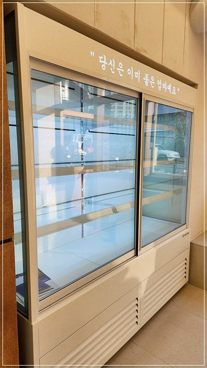
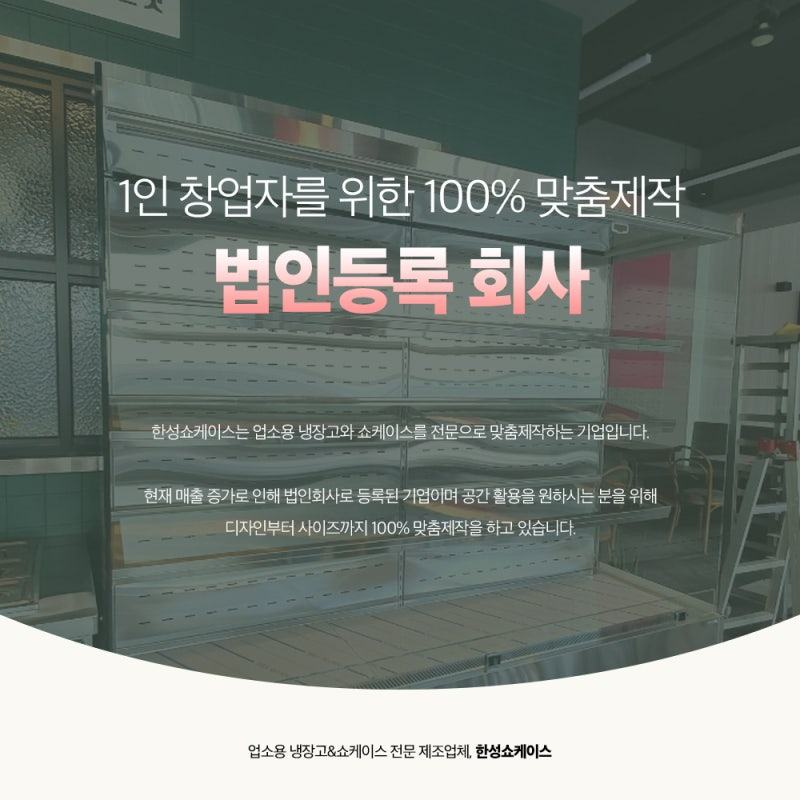
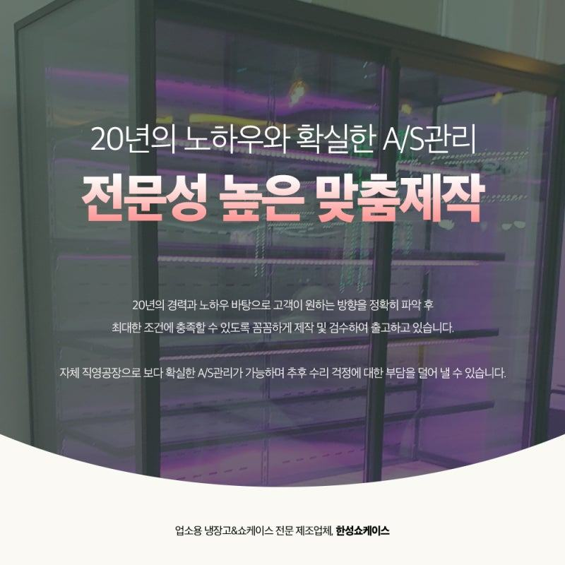
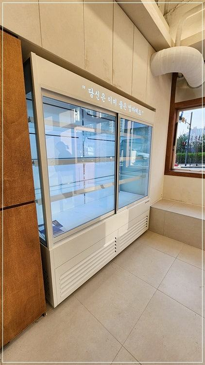
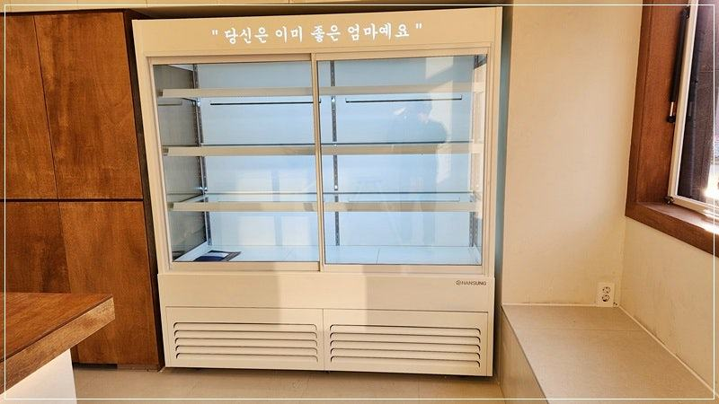
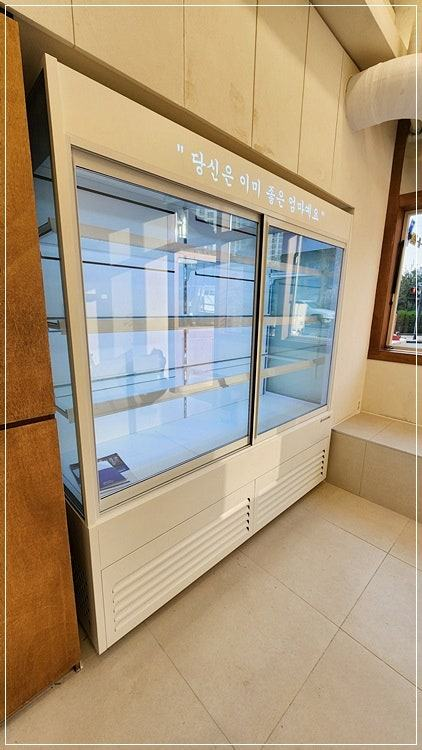

반찬(진열)쇼케이스
반찬쇼케이스 맞춤제작, 실측부터 설치까지 진행 순서

반찬쇼케이스 맞춤제작은 매장 실측과 반찬 용기 확인으로 시작해 디자인 상담, 도면 확정, 제작, 설치와 사후관리 순서로 이어집니다. 도면을 확정하기 전에 용기 크기, 채우는 방향, 오픈 일정을 정리해 두시면 중간에 다시 고치는 일이 줄어듭니다.
안녕하세요. 반찬가게 진열 냉장고를 공장에서 직접 만들어 설치까지 해 드리는 한성쇼케이스입니다.
기성품을 둘러보다 맞춤 제작으로 마음을 정하신 사장님들이 다음으로 궁금해하시는 건 "그럼 뭐부터 하면 되나요?"입니다.
처음 해 보는 일이니 어디까지 내가 정해야 하는지, 언제쯤 매장에 들어오는지 감이 잘 안 오시죠.
반찬쇼케이스는 매일 수십 가지 반찬을 채우고 비우는 장비라, 제작에 들어가기 전 몇 가지만 정확히 정해 두면 쓰는 내내 편합니다.
반대로 이 단계를 건너뛰면 용기가 칸에 안 맞거나 채우는 방향이 불편한 채로 몇 년을 쓰게 됩니다.
오늘은 반찬쇼케이스 맞춤제작이 어떤 순서로 진행되는지, 단계마다 무엇을 준비하면 좋은지 정리해 드리겠습니다.
1. 1단계, 실측과 용기 확인
가장 먼저 설치 자리의 폭·깊이·높이와 출입문 폭을 잽니다. 반찬가게는 계산대와 포장대가 쇼케이스 끝에 붙는 경우가 많아, 그 공간까지 함께 재 두셔야 합니다.
실측만큼 중요한 게 반찬 용기입니다. 쓰실 용기를 하나씩 재서 가로·세로·높이를 알려 주시면, 그 크기에 맞춰 칸 폭과 단 높이를 잡습니다.
용기를 아직 정하지 않으셨다면 이 단계에서 함께 정하시는 게 좋습니다.
- 설치 자리와 출입문, 계산대 공간을 함께 재세요.
- 쓰실 반찬 용기의 치수를 적어 두세요.
- 매장 사진을 여러 방향에서 찍어 두세요.
2. 2단계, 디자인과 구성 상담
치수가 나오면 매장 분위기와 원하시는 콘셉트를 듣고 외관을 정합니다. 프레임 색과 마감 소재, 조명 색, 상단 간판 자리 같은 부분입니다.
요즘은 젊은 1인 가구나 맞벌이 손님을 겨냥해 깔끔한 분위기를 원하시는 매장이 늘었습니다.
기능 쪽에서는 반찬을 앞에서 채울지 뒤에서 채울지, 손님이 직접 꺼내는 칸이 필요한지, 김치류와 나물류를 나눌지 같은 구성을 함께 정합니다.
국내 최초 쇼케이스 전문 디자이너가 상주해 매장 사진을 보며 바로 의견을 드립니다.


3. 3단계, 도면 확정
상담 내용을 바탕으로 도면이 나오면 꼭 숫자를 하나씩 확인해 주세요. 특히 단 높이와 칸 폭이 용기 치수와 맞는지, 뒤쪽 작업 공간이 충분한지가 중요합니다.
이 단계에서 바꾸는 건 어렵지 않지만, 제작에 들어간 뒤에 바꾸면 일정이 밀립니다. 오픈 날짜가 정해져 있다면 도면 확정일을 거꾸로 계산해 두세요.
4. 4단계, 제작과 설치, 그 이후
도면이 확정되면 공장에서 제작에 들어갑니다. 한성쇼케이스는 유통만 하는 곳이 아니라 업소용 냉장고와 쇼케이스를 직접 만드는 제조 공장이라, 제작 중 확인이 필요한 부분도 바로 소통할 수 있습니다.
설치 날에는 반입 경로를 비워 두시고, 전원과 배수 위치를 미리 정해 두세요. 설치 뒤에는 전국 240여 개 A/S 센터를 통해 사후관리를 이어 갑니다.
당일 만든 반찬을 파는 업종이라 고장이 길어지지 않도록 접수 연락처를 잘 보이는 곳에 붙여 두시길 권해 드립니다.
- 설치 전날 반입 경로의 짐을 치워 두세요.
- A/S 연락처를 계산대 근처에 붙여 두세요.
체크리스트
- 설치 자리·출입문·계산대 공간 실측
- 반찬 용기 치수
- 채우는 방향과 손님 셀프 칸 여부
- 프레임·조명·간판 등 외관 사양
- 도면 확정일과 오픈 일정
- 설치 당일 반입 경로·전원·배수
현장에서 자주 보는 경우: 디자인은 마음에 드는데 사이즈가 안 맞을 때
가게 오픈을 준비하며 이것저것 둘러보다가 마음에 쏙 드는 제품이 없거나, 디자인은 좋은데 사이즈가 매장에 맞지 않아 연락을 주시는 사장님이 많습니다.
반찬쇼케이스 주문이 늘면서 이런 상담도 함께 늘었습니다.
이럴 때는 홈페이지에서 비슷한 제품을 둘러보시고 원하시는 크기와 규격을 알려 주시면 그 기준으로 상담을 시작합니다.
제조부터 판매까지 한곳에서 하기 때문에 매장 인테리어와 사이즈를 함께 고려해 만들 수 있고, 설치와 시공, 이후 A/S까지 이어서 관리해 드립니다.





자주 묻는 질문
반찬쇼케이스 맞춤제작은 얼마나 걸리나요?
크기와 마감, 옵션에 따라 기간이 달라집니다. 오픈 날짜를 먼저 알려 주시면 도면 확정일과 제작 일정을 거꾸로 맞춰 안내해 드립니다.
반찬 용기를 아직 못 정했는데 상담을 시작해도 되나요?
네, 상담을 하면서 함께 정하셔도 됩니다. 다만 도면 확정 전에는 용기 치수가 정해져야 칸 폭과 단 높이를 정확히 맞출 수 있습니다.
멀리 있는 매장도 실측을 와 주나요?
매장 위치에 따라 방문 일정을 잡거나, 사진과 치수를 받아 먼저 상담을 진행합니다. 실측 방법을 안내해 드리니 편하게 문의해 주세요.
매장 조건에 맞춰 만드는 한성쇼케이스
원하시는 제품 사진과 설치할 공간 사진만 보내 주셔도 매장에 맞는 구성을 추천해 드립니다.
- 전국 240여 개 A/S 전담 센터 운영
- 본사 대량 자재 매입으로 품질 대비 합리적인 가격
- 유럽제·삼성 냉각 콤프레셔 적용
- 국내 최초 쇼케이스 전문 디자이너 상주
매장 폭과 원하는 진열 구성을 알려 주세요. 실측과 견적을 안내해 드립니다.
031-986-2458